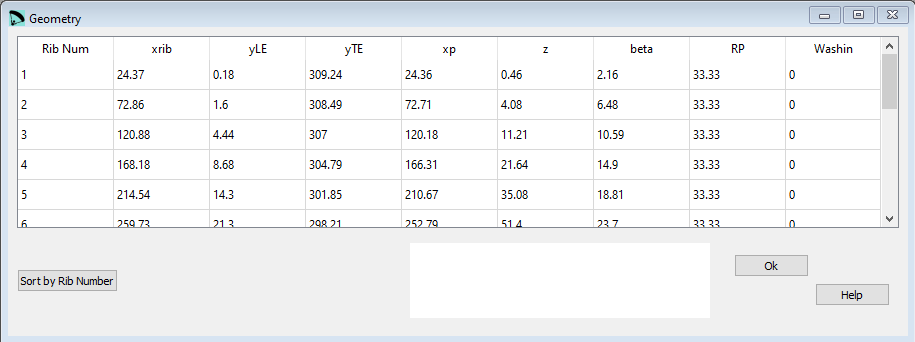

Flügelgeometrie¶
Im Fenster Geometrie wird der zweite Teil der Daten aus dem ersten Abschnitt der lep Datei definiert.
{kind=link}
Rohdaten:
* Rib x-rib y-LE y-TE xp z beta RP Washin Rot_z Pos_z
1 41.72 0.42 270.76 41.69 1.16 0.00 33.33 0.00 0.00 50.0
2 124.64 3.78 268.69 124.07 10.33 10.00 33.33 3.00 1.95 50.0
3 206.57 10.51 264.57 203.97 28.27 15.00 33.33 6.00 2.91 50.0
4 286.98 20.74 258.41 279.31 56.16 25.00 33.33 10.00 4.75 50.0
5 365.35 34.64 250.23 347.87 93.98 30.00 33.33 15.00 5.63 50.0
6 440.64 57.63 239.83 407.14 140.22 45.00 33.33 20.00 7.97 50.0
7 511.15 96.61 227.18 453.42 193.28 50.00 33.33 25.00 8.64 50.0
8 575.50 148.95 212.80 473.45 254.62 90.00 33.33 30.00 11.31 50.0
Diese Parameter können nur mit der Hilfe einer zusätzlichen Geometrischen Betrachtung (am besten mit Hilfe eines CAD Programmes) erzeugt werden.
Als Alternative können die Parameter auch mit dem Pre-Prozessor auf Basis von wenigen Parametern berechnet und anschliessend in den Prozessor Teil importiert werden. Beachte: der Pre-Prozessor ist ein mögliches Hilfsmittel welches für einfache Flügelgeometrien nutzbar ist, für ausgefeilte Designs musst Du den Weg über ein CAD Programm nehmen.
Es gibt eine Beschränkung dass keine Zellen genau in der Mitte des Flügels definiert werden können. Für eine gerade Anzahl Zellen kann die mittlere Zelle mit einer Breite von 0.0 definiert werden.
Das Bild zeigt genau welcher Parameter welchem Mass entspricht.

Die zweitletzte Spalte definiert den Prozentanteil welcher die Flügeltiefe auf die Verwindung hat. Dieser Parameter wird nur ausgewertet wenn der Alpha mode im Basisdaten Fenster auf “1” gesetzt ist.
Die letzte Spalte definiert die Flügelverwindung für jede einzelne Rippe. Dieser Wert muss gesetzt werden wenn der Alpha mode im Basisdaten Fenster auf “0” gesetzt ist.
Nach Rippen Nr sortieren¶
Mit der Schaltfläche Nach Rippen Nr sortieren können die Zeilen neu angeordnet werden. Wenn das gemacht werden soll kannst Du die neuen Rippen Nummern in der ersten Spalte einsetzten und anschliessend mit der Schaltfläche die Tabelle neu sortieren.
BEACHTE die Zeilen müssen die Flügeldefinition von der Mitte nach aussen definieren.
Eine detaillierte Beschreibung in englisch findest Du auf der Laboratori d'envol website.